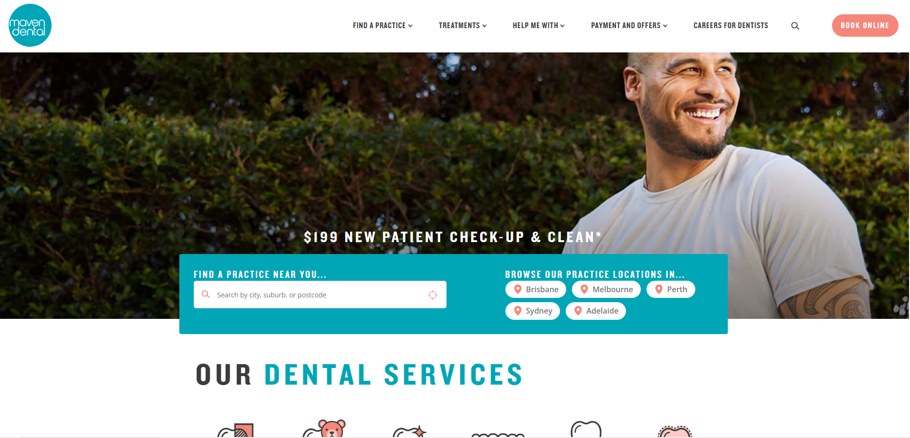

Projects

- Overview: This project aimed to deliver a robust dental appointment booking platform built on Sitecore CMS, allowing patients to easily schedule appointments online while giving clinic staff full control over content management and scheduling workflows.
- Tech Stack: C# ASP.NET MVC5, Sitecore CMS, HTML & CSS3 (Razor), JavaScript, jQuery, SQL Server
- The Problem: The initial platform suffered from poor booking reliability and frequent system errors. Additionally, it lacked flexibility in content updates and suffered from slow CMS performance due to unoptimized configurations and data handling.
- The Solution: The solution involved customizing Sitecore CMS modules to support flexible content and booking workflows, refactoring back-end logic to ensure accurate and reliable appointment processing, resolving critical bugs to reduce failure rates by 30%, and optimizing database queries to boost overall CMS performance.
- My Role: Asp.Net Back-end Developer My Contribution:
- Refactored appointment booking logic to enhance accuracy and ensure data consistency across user sessions
- Resolved system bugs and implemented error handling improvements, reducing failure rates by 30%.
- Optimized database interactions and Sitecore item queries to enhance overall CMS performance and responsiveness.

ü¶∑Lumino Appointment Dental Booking System (Kentico CMS)
- Overview: This project involved building a responsive dental appointment booking system on top of the Kentico CMS platform. The goal was to provide patients with an intuitive way to schedule appointments while ensuring the clinic could easily manage bookings and content through the CMS.
- Tech Stack: C# ASP.NET MVC5, Kentico CMS, HTML & CSS3 (Razor), JavaScript, jQuery, SQL Server
- The Problem: The initial platform was poorly branded, lacked responsiveness across devices, and suffered from multiple unresolved bugs, causing a poor user experience and critical booking issues.
- The Solution: The solution involved customizing the Kentico CMS theme to better reflect the clinic’s branding, implementing responsive layouts for all devices, and resolving critical system bugs to ensure smooth appointment booking and overall platform stability.
- My Role: Asp.Net Back-end Developer My Contribution:
- Customized Kentico CMS configurations and modules to support dynamic content management aligned with the clinic's branding goals.
- Resolved critical system bugs within booking and scheduling modules, reducing failure rates by 30% and improving reliability.
- Enhanced CMS performance and data handling through optimized queries and backend validation.
Hospital Information System
- Overview: an integrated hospital system designed to manage patient records, medical services, scheduling, and billing with seamless coordination between departments.
- Tech Stack: C#, ASP.NET Core MVC, ASP.NET Core Web API, JavaScript, jQuery, Knockout.js, Razor (HTML & CSS3), Bootstrap, Redis, SQL Server
- The Problem: Lack of centralized logging and frequent user complaints due to unintuitive workflows and missing features, leading to high QA and support overhead.
- The Solution: Enhanced logger configuration to catch errors more accurately, implemented two features based on Jira feedback, and introduced xUnit testing with CI/CD pipelines to reduce manual QA effort.
- My Role: Fullstack Asp.Net Developer My Contribution:
- Architected and deployed robust ASP.NET Core MVC & Web API applications reducing bugs by 25% and boosting reliability.
- Spearheaded the implementation of unit testing xUnit & CI/CD pipelines, cutting QA efforts by 30%.
- Streamlined Agile/Scrum workflows, improving delivery by 15%.
Flyingcape e-commerce Education Platform
- Overview: a digital marketplace enabling users to browse, book, and pay for educational classes across Southeast Asia.
- Tech Stack: C#, ASP.NET Core Web API, TypeScript, Next.js, Bootstrap, SQL Server.
- The Problem: The legacy platform suffered from extremely slow performance and inaccurate search results, frustrating users and limiting conversions.
- The Solution: Refactored inefficient queries, optimized database indexes, and implemented Redis caching to improve system speed. Enhanced search accuracy with better logic and pagination, resulting in faster load times and improved user experience.
- My Role: Lead Backend Developer & Full Stack Contributor My Contribution:
- Migrated from .NET Framework 4.5 to ASP.NET Core, reducing hosting costs by 25%.
- Redesigned repository pattern to eliminate redundant code and improve scalability.
- Improved search query logic and indexing, increasing search result accuracy.
- Integrated MasterCard and PayPal for flexible payment support.
- Led a small team to adopt agile practices and boost collaboration.
üì¶ Inventory Dashboard System
- Overview:Developed an internal web-based dashboard to monitor and manage inventory levels, supplier data, and stock movements in real time, improving visibility across departments and streamlining decision-making for procurement.
- Tech Stack: C#, ASP.NET Core MVC, JavaScript, jQuery, HTML & CSS3 (Razor), Kendo UI, Bootstrap, SQL Server
- The Problem: The existing inventory system lacked real-time visibility and was prone to data inconsistency, especially in supplier-related records. Manual workflows slowed down daily operations and caused delays in stock updates.
- The Solution: The system was refactored using ASP.NET Core MVC to improve scalability and maintainability. Real-time supplier data handling was enabled by customizing the Kendo UI Grid with advanced filtering and inline editing. Standardized development protocols were applied to reduce inconsistencies and improve debugging efficiency.
- My Role: Lead Backend Developer & Full Stack Contributor My Contribution:
- Migrated from .NET Framework 4.5 to ASP.NET Core, reducing hosting costs by 25%.
- Redesigned repository pattern to eliminate redundant code and improve scalability.
- Improved search query logic and indexing, increasing search result accuracy.
- Integrated MasterCard and PayPal for flexible payment support.
- Led a small team to adopt agile practices and boost collaboration.
üíº Philo Technologies‚ÄìPortfolio Investment Management System
- Overview: A robust portfolio investment management system designed for financial professionals to monitor, manage, and report on investment performance. The platform streamlined portfolio tracking, reporting, and client-facing dashboards, improving operational visibility and control.
- Tech Stack: C#, ASP.NET Web API, ASP.NET MVC5, Angular.js, JavaScript, jQuery, HTML & CSS3 (Razor), Bootstrap, jqGrid, SQL Server
- The Problem: The existing system incurred high maintenance and licensing costs due to reliance on paid components. Additionally, slow front-end performance and inconsistent Agile workflows led to frequent delays and increased post-release bug reports.
- The Solution: Optimized the front-end architecture by replacing costly third-party UI elements with customized Bootstrap and jqGrid configurations. Performance tuning and streamlined state management were applied to Angular.js components. Agile practices were refined to improve sprint planning and reduce delivery friction.
- My Role: Fullstack Asp.Net Developer My Contribution:
- Built Angular.js front-end solutions, meeting 100% of client deadlines.
- Reduced bug resolution times by 25% and post-release issues by 20%.
- Improved Agile workflow efficiency by 15% through better task breakdown and backlog grooming.